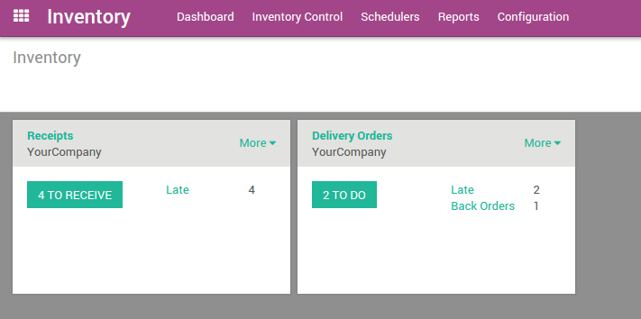
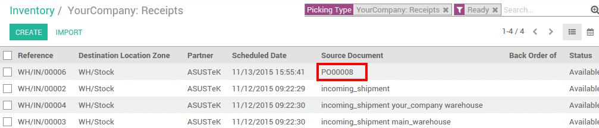
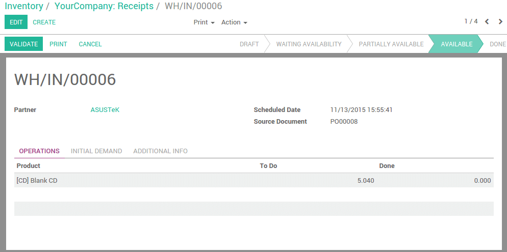
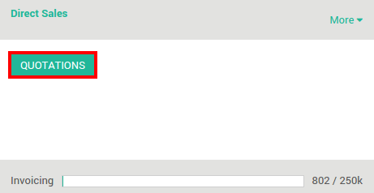

Overview
Inventory is the heart of your business. It can be really complicated, but with Odoo, doing a receipt or a delivery has never been easier. We will show you in this document how easy to do a full process, from the receipt to the delivery.
Odoo inventory is fully integrated with other applications, such as Purchase, Sales or Inventory. But is not limited to those processes, it is also fully integrated with our e-Commerce, Manufacturing and Repairs applications.
How to process a receipt ?
Install Purchase application
First, you will need to install the Purchase Management application. Go to and install it.

Make a purchase order
Go to the Purchases applications. The first screen is the Request for Quotation list. Click on the Create button.
Fill in the Vendor information and click on Add an Item to add some products to your request for quotation.

Click on Confirm order when you are sure about the products, prices and quantity.
Retrieve the Receipt
You can retrieve the receipt order in 2 ways:
From the purchase order
On the top right of your purchase order, you will see a button with the related Receipt:

Click on it to see the Transfer order.
From the Inventory Dashboard
When opening the Inventory application, click on # to receive to see the list of your receipts to process.
In the list, click on the one related to the purchase order:
Process the Receipt
To process the stock transfer. Simply click on Validate to complete the transfer. A message will appear asking if you want to process the whole order, accept it by clicking on Apply.
Note
Procurements can be automated. Please read our document How to choose between minimum stock rule and make to order? for more information.
How to process a delivery order ?
Install Sales application
First, you will need to install the Sales Management application. Go to and install it.
Place a sale order
Go to the Sales applications. Click on the Quotations button of your team.
You will get the list of all your quotations. Click on the Create button.
Fill in the Customer informations and click on Add an Item to add some products to your quotation.
Click on Confirm sale to place the order.
Retrieve the Delivery order
You can retrieve the delivery order in 2 ways:
From the sale order
On the top right of your sale order, you will see a button with the related Delivery:

Click on it to see the Transfer order.
From the Inventory Dashboard
When opening the Inventory application, click on # to do to see the list of your receipts to process.

In the list, click on the one related to the sale order:
Note
If the product is not in stock, the sale order will be listed as Waiting on your dashboard.
Process the delivery
To process the stock transfer. Simply click on Vaidate to complete the transfer. A message will appear asking if you want to process the whole order, accept it by clicking on Apply.
Note
E-Commerce orders are processed the same way.
Tip
You can easily integrate your delivery orders with different delivery methods. Please read the document How to setup a delivery method?.
Advanced flows
In this document, the flows that are explained are the most simple ones. Odoo also suit for companies having advanced warehouse management.
- By default, only receipts and deliveries are configured but you can activate the use of multi-locations and multi-warehouses to do internal transfers.
- Routes: you can automate flows with push and pull rules
- Multi-step receipts and deliveries can be easily configured for each warehouse
- Much more: Barcode scanning, serial numbers, lots, cross-docking, dropshipping, integration with a third-party shipper, putaway and removal strategies.... All of it is possible with Odoo.